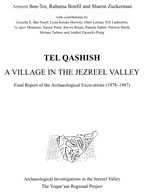

Amnon Ben-Tor, Ruhama Bonfil, and Sharon Zuckerman
Tel Qashish: A Village in the Jezreel Valley
Institute of Archaeology, Hebrew University of Jerusalem, and Israel Exploration Society: Jerusalem, 2003
 |
Tel Qashish (Tell Qasis in Arabic), map reference 160.232, is located on the northern bank of the Kishon River, where a bend in the stream encloses the site on two sides. The settlement thus occupied an excellent strategic position on one of Kishon fords, in close proximity to Tel Yoqne'am some 2km away, the major site in the region, on which Tel Qashish was most probably dependent (Plan 1). The elongated mound (ca. 270 x 160 m) covers an area of about 10.7 acres (ca. 43 dunams) at the base of the tel (Plan 1, photos 1-3). The western half is about 5 m higher than the eastern half. The mound slopes steeply on all sides, except on the northeast, where the approach road to the site was probably located (Photos 1-2). Aharoni suggested that the site should be identified with H?elkath, No. 112 on the list of Thutmose III (Aharoni 1959:119-122, 1979:163). Another possibility, which the authors prefer, is to identify it with Dabbesheth (Josh 19:11). |
| Back to Publications | Table of Contents |